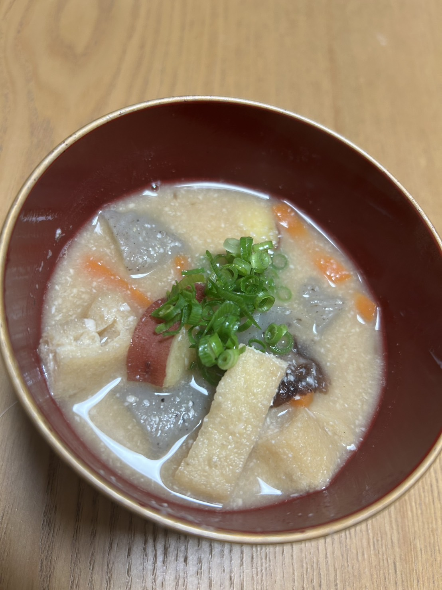

はじめまして！関西学院大学に通う大学3年のヒヨコです🐣
まずは誰？って感じだと思うので、軽く中の人の自己紹介から入ろうと思います〜！
趣味は「ご飯探し&食べること」です！
どのくらい好きかというと、Googleマップに行きたいお店をひたすら保存していくくらい好きです。ほぼ生き甲斐です。
嫌いな食べ物は、海のミルクこと牡蠣と、森のミルクことアボカドです🥑🦪
逆に言えば、それ以外は基本なんでも食べます😆
食べるだけでなく、料理も好きで、週1くらいで料理もするのですが‥（男飯しか勝たん）料理してるとふと思うことがあります…。
「野菜の皮とか種って、めっちゃ捨てられてない…？」😭
しかも、それって全部食べられないものばかりじゃない気がするんです。
農林水産省によると、日本の食品ロス量は年間で約464トン、国民1人当たり1日約102 gでコンビニのおにぎり1個分🍙という計算になります。
（出典：食品ロス量 令和5年度統計）
それに対して、世界の約7.6億人つまり約11人に1人が食糧不足で食べるものが無く、栄養が足りていない状態です。
これってほんとに勿体無いですよね。もっともっと違う活用方法があれば、解決できるかもしれない。そこから、つながる新たな未来があるかもしれない‥
そこで私たちは、そんな“未活用資源”の1つである「酒粕」に注目しています！
そもそも酒粕は日本酒を作る過程で生まれる副産物で、 兵庫県では給食に粕汁が出るほど一般的に活用されています。 普通の味噌汁と違って、酒の香り、深みと甘みが感じられてとっても美味しいんです🤤 （ヒヨコ一家どハマり中🐣）
（実際に使ってみた‼️⬇️）

一方で、保管方法や使用方法に限りがあり廃棄されてしまうことも少なくありません。
もし、この酒粕が肥料として使えて植物の生育を促す効果があれば、新しい資源の活用方法になると思いませんか！？！？笑
私たちAgriNOVAの使命はそんな酒粕の新たな活用方法をみなさんに知っていただくことで、 食品廃棄物の削減や資源の有効活用につなげ、持続可能な生産・消費の実現に貢献することです。
今後このブログでは、農業・肥料・食品・AIなど幅広く取り扱っていきます！皆さん是非次回も楽しみにしていてくださいねっ🙌